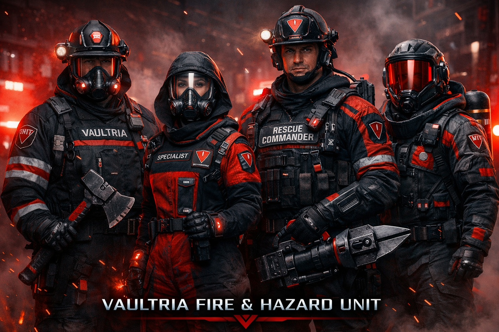

Defense & enforcement · Fire & Hazard (FHU)
VAULTRIA Fire & Hazard Unit
FHU — disaster control, not only firefighting: integrated with Aegis Prime / dispatch, VMC for life support, and Custodian of Order command. Economy: CV / TV (⩔) .
Unit lineup

Tactical operatives to heavy hazard — one triangle, one mission: control chaos.
Motto
We don’t fight fire. We control chaos.
Core purpose
FHU handles what ordinary departments cannot scale to in VAULTRIA’s risk model:
Fires — urban, industrial, wildland
Chemical and biological hazards
Explosions and structural collapse
Energy system failures — grids, high-yield sources
Classified / unknown incidents (compartmentalized)
Disaster control specialists — not only firefighters.
Hierarchy
1. Chief of Hazard Command
Leads the entire Fire & Hazard Unit nationwide — reports to Custodian of Order ; disaster protocols, emergency scaling, national resource deployment.
2. Zone Hazard Directors
One per major Vault Zone — regional stations, hazard readiness, local disaster strategy.
3. Sector Commanders
Multiple response teams; multi-incident coordination; AI-assisted deployment decisions.
4. Response Team Leaders
On-scene leaders — first decision authority at the incident edge.
5. Specialist operatives
Boots on ground — suppression, rescue, HAZMAT, energy, aerial, analysis; attached VMC elements where doctrine assigns.
Specialized roles
Fire suppression operatives
Control and extinguish — resistant suits, smart foam / advanced suppression, structural fire behavior.
Urban rescue specialists
Collapse and entrapment — hydraulic tools, debris navigation, stabilization.
Hazard specialists (HAZMAT)
Chemical, bio, radiation — highest personal risk tier; containment-first doctrine.
Energy control engineers
Grids, explosive energy sources, controlled shutdown and isolation.
Aerial response operators
Drone and aerial suppression — thermal scan, sky-based delivery.
Disaster analysts
Work with Aegis Prime — spread prediction, risk zones, recommended posture (human command retains release).
Medical response (attached)
Burn, toxic exposure, trauma stabilization — VMC integration on mass-casualty and golden-hour tasking.
Operational structure
Aegis Prime (or national sensors) detects anomalyAlert to Sector Commander
Nearest response team deployed
Drones first — seconds-scale where possible
Teams split by module: fire → suppression; collapse → rescue; chemical → hazard
Modular, fast, pre-planned handoffs with VRD where joint dispatch applies.
Field rank ladder (summary)
Chief of Hazard Command → Director → Commander → Captain (team leader) → Lieutenant → Specialist → Operative
Special divisions
Inferno Division
Extreme fires, uncontrollable zones, experimental suppression — highest thermal risk.
Black Hazard Unit
Classified threats, unknown substances, sealed incidents — compartmentalized; most FHU never see the roster.
Rapid Containment Squad
First touch — deploy in 30–60 seconds where infrastructure allows; stabilize before full strike package.
Tech & equipment
Personal
Heat-vision helmets, oxygen regulation, hazard-detection AI
Exo-assist for lift and breach
Platforms
Fire drones, automated suppression, rapid trucks, hazard containment units, aerial firecraft
Rules of operation
Life > property Containment over uncontrolled destructionNo uncontrolled spread — environmental and civic limitsAI recommendations must be considered — human command authorizes exceptions
Vaultrian difference
Elsewhere, firefighters often react . In VAULTRIA, FHU is built to predict, channel, and neutralize before escalation — within physics and honesty about limits.
Reality
Some fires outpace any doctrine
Some hazards stay unknown
Some missions are fatal — that is why the covenant and honors matter
Position in the system
FHU sits between Police (order), military (extreme external threat), and Medical Corps (life-saving care): the bridge between chaos and control when the environment itself is the enemy.
Why join FHU
Elite, meaningful — you run toward what others flee
You run toward what others run from.
1. Status & recognition
Among the most respected operational units; public frame: life savers, not only responders
High Trust Vyr
2. Financial
Above police -tier base Core Vyr (CV)
Bonuses in Vyr (⩔) for lives saved, high-risk ops, rapid response metrics
Fast-track TV — housing and services priority
3. Family protection
Dependent protection programs; priority emergency response; household risk monitoring where chartered
4. Housing & lifestyle
Secure residential zones; smart safety; reduced cost burdens where statute provides
5. Training
Disaster survival, tactical rescue, hazard handling, AI-assisted decision drills
6. Career
Promotion by performance, pressure decisions, lives saved — not seniority alone
7. Technology
Exo-suits, advanced suppression, detection stacks, drone teaming
8. Healthcare
Immediate access; burn, toxic, trauma programs; long-term recovery
9. Honors
Shield of Life — multiple lives savedRed Valor — extreme risk missionsAegis Honor — exceptional serviceNational Safety Archive — durable public record
10. Mental support
Mandatory psych support, decompression, stress monitoring (policy-tiered)
11. Priority access
Faster cross-zone movement; emergency overrides within rules
12. Influence
Respect across Police, military, public; input on safety and emergency planning
Reality
High risk, exposure, emotional load — not everyone qualifies
Summary: status, protection, elite lifestyle, purpose — with a job that can take everything. That is why the system pays in trust and Vyr.
Next design layers
Recruitment trials and academy structure
Rank badges and uniform identity per role
Vehicle and tech blueprints
Vaultryn dispatch integration (panic → route → FHU module)